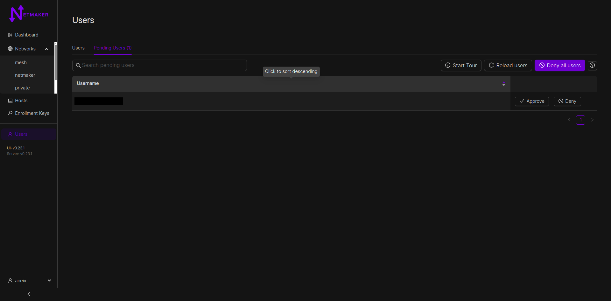
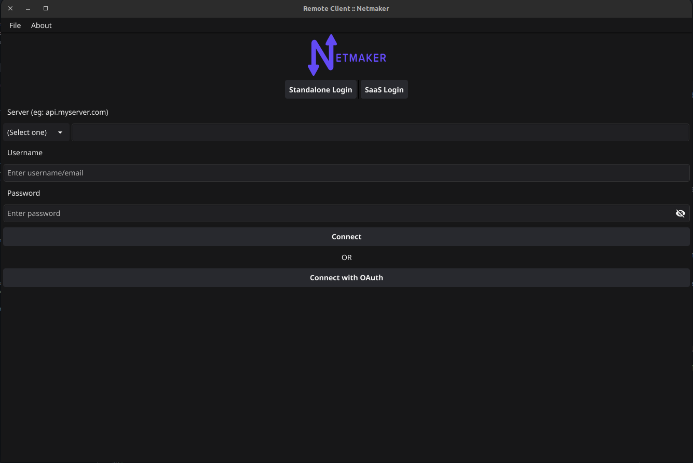

User Management¶
Superadmin Signup
When you start Netmaker for the first time, you will be prompted to create a superadmin account from the UI like below

Input your username and a super memorable but strong password then click on the Sign up button. Once you’ve signed up, you can login to your Netmaker server with the account.

Integrating OAuth¶
Introduction¶
As of v0.14.5, Netmaker offers integration with the following OAuth providers:
GitHub
Google
Microsoft Azure AD
Open ID Connect (OIDC)
By integrating with an OAuth provider, your Netmaker users can log in via the provider, rather than the default simple auth.
Configuring your provider¶
In order to use OAuth, configure your OAuth provider (GitHub, Google, Azure AD).
You must configure your provider (except for Azure AD) to use the Netmaker Dashboard URI dashboard.<netmaker.base.domain> as the origin URL.
For example: https://dashboard.netmaker.mydomain.com
You must configure your provider to use the Netmaker API URI redirect route with the following format: https://api.<netmaker base domain>/api/oauth/callback.
For example: https://api.netmaker.mydomain.com/api/oauth/callback
General provider instructions can be found with the following links:
Instructions for GitHub: https://oauth2-proxy.github.io/oauth2-proxy/docs/configuration/oauth_provider/#github-auth-provider Instructions for Google: https://oauth2-proxy.github.io/oauth2-proxy/docs/configuration/oauth_provider/#google-auth-provider Instructions for Microsoft Azure AD: https://oauth2-proxy.github.io/oauth2-proxy/docs/configuration/oauth_provider/#microsoft-azure-ad-provider Instructions for OIDC: https://oauth2-proxy.github.io/oauth2-proxy/docs/configuration/oauth_provider/#openid-connect-provider
Configuring Netmaker¶
After you have configured your OAuth provider, take note of the CLIENT_ID and CLIENT_SECRET. If you are using Azure for oauth, you may also want to note down the Azure tenant ID you wish to use.
Next, Configure Netmaker with the following environment variables. If any are left blank, OAuth will fail.
AUTH_PROVIDER: "<azure-ad|github|google|oidc>"
CLIENT_ID: "<client id of your oauth provider>"
CLIENT_SECRET: "<client secret of your oauth provider>"
SERVER_HTTP_HOST: "api.<netmaker base domain>"
FRONTEND_URL: "https://dashboard.<netmaker base domain>"
AZURE_TENANT: "<only for azure, you may optionally specify the tenant for the OAuth>"
OIDC_ISSUER: "<only for oidc, your issuer endpoint for OIDC ie. http://127.0.0.1:5556/dex"
After restarting your server, the Netmaker logs will indicate if the OAuth provider was successfully initialized:
sudo docker logs netmaker
Once successful, users can click the key symbol on the login page to sign-in with your configured OAuth provider.

Configuring User Permissions¶
User management is done through the Netmaker dashboard, under the Users (or Manage Account, for SaaS) section from the left navigation bar. Only server admins have access to this section and can promote users to admin status. The superadmin/tenant owner can both promote and demote users to admin status.

Normal users do not have access to the dashboard and are recommended to use our Remote Access Client to connect to the network. An admin must aforehand grant such users permission to certain networks by assigning them to remote access gateways however. View the “Remote Access” section for more information on this.
Oauth Users¶
Users are also allowed to join a Netmaker server via OAuth. They can do this by clicking the “Login with SSO” button on the dashboard’s login page.
{kind=link}
From v0.23.1, new accounts would be added to a pending list and would require approval from an admin before they can access any resource. This version also allows whielisting of email domains for OAuth users. Server admins can do that by adding a comma-separated list of domains to the ALLOWED_EMAIL_DOMAINS environment variable. eg: ALLOWED_EMAIL_DOMAINS=example.net,example.com
Users in Netmaker Professional¶
Netmaker Professional offers advanced user management features. The super admin can create users with either a user or admin role. Only Admins can access the dashboard, the normal users can use remote access client to join the network through a gateway. Admins can add users and assign them to remote access gateways, which includes managing the user’s access to different remote access gateways.
Here is a breakdown of the different user types and their permissions:
User: Users do not have access to the Netmaker dashboard. They can only use the remote access client to connect to a gateway.
Admin: They can create and manage users, networks, and gateways. They cannot create/manage other admins
Super Admin: Super admins have full access to Netmaker. They can create and manage users, admins, networks, and gateways. They can also manage user and admin permissions.
Adding users¶
To add a user, go to the Users section and click the Add User button. Fill in the user’s details, including their name, password, and role.
As a super admin, you can add users with the role of admin or user.
As an admin, you can only add users with the role of user.
{kind=link}
The credentials will need to be shared with the added user.
Attaching or removing user from a remote access gateway¶
To attach users to a remote access gateway or remove users from a gateway, you will need to have the gateway set up. Once the remote access gateway is set up, you will see an option to attach or remove users from the gateway’s dropdown menu on the table row.

You can click the button to either attach or remove a user

Using the Remote Access Client (RAC)¶
Once a user has been attached to a remote access gateway, they can connect to a network using the remote access client. To do this, they will first need to log in using the credentials that were provided to them. Social login is also supported.
{kind=link}
After successful login you will be shown all the networks and gateways you have given access to, so now you will be able to connect/disconnect/refresh your connection to a gateway. Internet gateways are depicted with a globe icon. An internet gateway can be used to route all your traffic through the gateway, this is useful if you want to access the internet without exposing your public IP address. This behaves like a traditional VPN.

The remote access client also has the following options:
Refresh connection: This basically disconnects the current connection to the remote access gateway and then reconnects to it.
Reload clients: This reloads the client data on the page, which can be useful if the data has changed since the page was last loaded.

Reset: This resets all connections to remote access gateways across all Netmaker servers and networks known to the client. This can be useful if you end up with a bad wireguard or network interface configuration or are having trouble connecting to a gateway. you should only use this option if Refresh connection does not work.
Using Netmaker like a traditional VPN¶
Some remote access gateways, specifically internet gateways (depicted by globe icon) can route all your traffic through the them. This can be useful if you want to access the internet without exposing your public IP address. This behaves like a traditional VPN. Internet gateways is a Pro-only feature.
Controlling RAC user sessions¶
On pro servers/tenants, the duration of a non-admin user’s remote session can be controlled. This can be done by setting RAC_AUTO_DISABLE (to true) and JWT_VALIDITY_DURATION (to an integer in seconds) environment variables on the server.
With RAC_AUTO_DISABLE set to true, a non-admin user’s remote sessions will be disabled after the duration specified in JWT_VALIDITY_DURATION has elapsed. The user will have to relogin to enable their remote session again.
NOTE: The JWT_VALIDITY_DURATION environment variable also configures all the JWT token validity duration for all users, regardless of whether RAC_AUTO_DISABLE is set to true or not.
FAQs and Known Issues¶
Q: I am getting an error when trying to connect to a gateway.
A: Make sure that the gateway is running healthily and that you have access to it. Also try to “Refresh” and see if that fixes the issue. Otherwise “Reset” all connections and try again.
Q: Other WireGuard-based VPNs interfere with Netmaker RAC.
A: This is a known issue. If you have other WireGuard-based VPNs running on your machine, they may interfere with Netmaker RAC. You can try to disable them and see if that fixes the issue. Pro-tip: Netmaker Pro offers internet gateway functionality, so you can use it just as a traditional VPN. For more information, explore the Remote Access gateway feature.